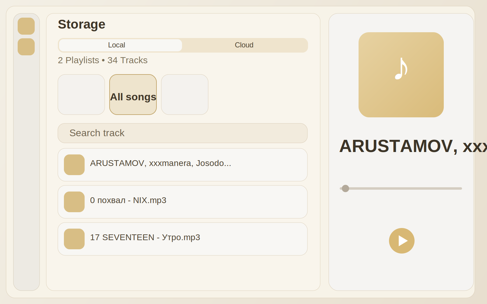
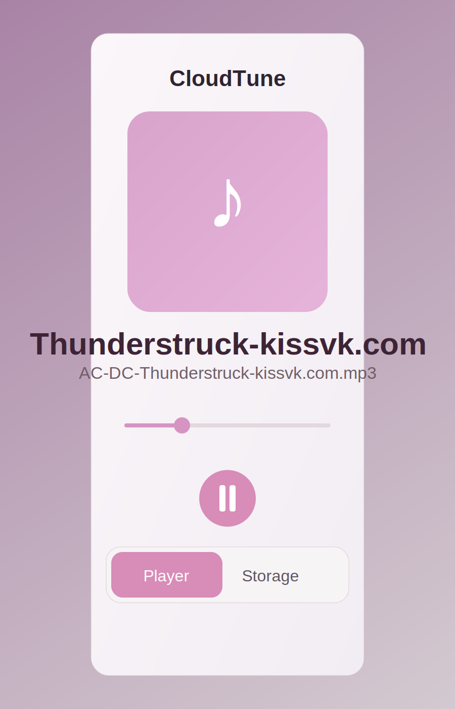
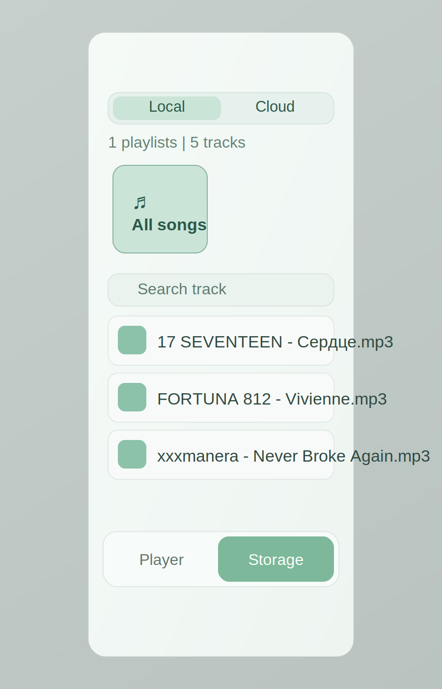

CloudTune - это рабочий fullstack: Flutter-клиент, backend на Go и PostgreSQL,
плюс отдельный Telegram-бот для мониторинга. Приложение уже умеет локальную библиотеку,
облачную синхронизацию, плейлисты, лайки и фоновое воспроизведение.
CloudTune сделан как единый стек: мобильный/desktop-клиент, API и инфраструктура мониторинга.
Ниже ключевые функции, которые уже доступны в текущей версии.
JWT-аутентификация и персональная библиотека пользователя.
Дедупликация треков в облаке по content_hash.
Локальные и облачные плейлисты, включая системный Liked songs.
Фоновый плеер, queue, shuffle, repeat-one, управление через media session.
Windows desktop-shell с отдельной навигацией и правой player-панелью.
Ниже текущие экраны интерфейса: desktop-режим и два мобильных состояния (player/storage).

Desktop: хранилище и плеер в двухпанельной раскладке.

Mobile Player: текущее воспроизведение, seek и transport-controls.

Mobile Storage: локальные/облачные треки и плейлисты.